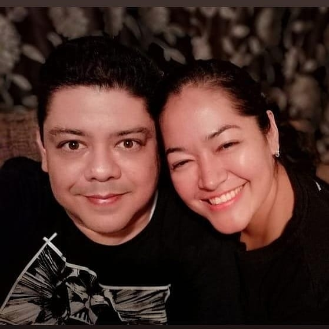

About me

Miguel García
Hello everyone, it's a pleasure to meet you and make this brief introduction about me. My name is Miguel and I live in Acapulco, Guerrero. I am 45 years old and have been married for 11 years. I work as a music teacher for Yamaha and I teach electric guitar and electric bass to people of all ages. I especially like working with young people because we have a lot of fun in the classes. I met the church when I was 26 years old and since then I am thankful for the blessings and opportunities that the gospel gives us day by day. This program in particular (Pathway) is the answer to my prayers to continue preparing myself professionally.
I chose a career in software development and although I still don't know what area I want to specialize in, I am motivated to learn and excited to find an area where I can specialize in the future.
I share with you my whatsapp (+52) 7443815991. I wish you all a very productive semester. Regards to all of you.